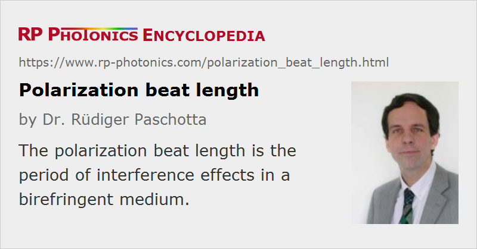

Polarization Beat Length
Definition: the period of interference effects in a birefringent medium
German: Polarisationsschwebungslänge
Categories: general optics, fiber optics and waveguides
How to cite the article; suggest additional literature
Author: Dr. Rüdiger Paschotta
When two waves with different linear polarization states propagate in a birefringent medium, their phases will evolve differently. We assume that the polarization of each wave is along one of the principle directions of the medium, so that this polarization will be preserved during propagation. For monochromatic waves with identical optical frequencies, the difference in phase delay will be proportional to the propagation length L and to the difference in wavenumbers Δk (for a bulk medium) or in the imaginary parts of the propagation constants Δβ (for a waveguide):
This means that the phase relation between both waves is restored after integer multiples of the so-called polarization beat length (or polarization beat distance):
where λ is the vacuum wavelength (not the wavelength in the medium).
If the two waves were in phase originally (L = 0), the total resulting polarization state was linear. After a quarter of the polarization beat length, the phase difference is π / 2, and we have circularly polarized light. After half the beat length, we have linearly polarized light again, but with the direction rotated by 90°. After one full beat length, the original polarization direction is obtained.
Polarization-maintaining fibers can have polarization beat lengths of a few centimeters or even only a few millimeters. This is a much stronger birefringence than achievable by strongly bending a fiber with radially symmetric design. Even sub-millimeter beat lengths are possible with some photonic crystal fibers. Tentatively, a short beat length, as results from strong birefringence, reduces the sensitivity of the fiber to mode coupling effects, which may result from imperfections in manufacturing or from mechanical stress.
Note that although fibers with a nominally symmetric design can have some birefringence due to imperfections and mechanical stress, they do not have a well-defined polarization beat length, and not even a well-defined polarization axis.
Measurement of Polarization Beat Length of Fibers
There are different methods for measuring the polarization beat length of an optical fiber. As it is difficult to access the light within the fiber or to vary the fiber length, the preferred methods work with a fixed length L of fiber. One method is to inject linearly polarized broadband light (for example, from a superluminescent source) and to record the optical spectrum after transmission through the fiber and another polarizer. That spectrum will exhibit oscillations with a period Δλ, from which the polarization beat length can be calculated:
This equation is based on the usually well justified assumption that the difference of effective indices depends only weakly on the wavelength.
There is a number of more sophisticated measurement techniques, often exploiting fiber nonlinearities such as Brillouin scattering. Some of them can spatially resolve the birefringence in the fiber.
Questions and Comments from Users
Here you can submit questions and comments. As far as they get accepted by the author, they will appear above this paragraph together with the author’s answer. The author will decide on acceptance based on certain criteria. Essentially, the issue must be of sufficiently broad interest.
Please do not enter personal data here; we would otherwise delete it soon. (See also our privacy declaration.) If you wish to receive personal feedback or consultancy from the author, please contact him e.g. via e-mail.
By submitting the information, you give your consent to the potential publication of your inputs on our website according to our rules. (If you later retract your consent, we will delete those inputs.) As your inputs are first reviewed by the author, they may be published with some delay.
Bibliography
| [1] | V. N. Filippov et al., “Measurement of polarisation beat length in single-mode optical fibres with a polarisation modulator”, Electron. Lett. 26 (10), 658 (1990), doi:10.1049/el:19900431 |
See also: birefringence, polarization mode dispersion, polarization-maintaining fibers
and other articles in the categories general optics, fiber optics and waveguides
|  |
If you like this page, please share the link with your friends and colleagues, e.g. via social media:
These sharing buttons are implemented in a privacy-friendly way!